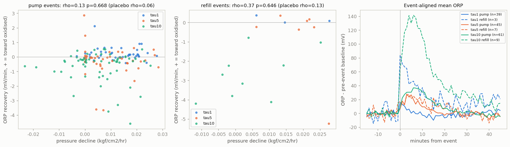

ORP 事件回落 vs 壓力下降 產生於 2026-10-15 21:42:40（Jetson）· 資料 202607至08最新循環研究 · 164 個事件
問題
反應器裡只有嗜氫甲烷菌。若補氣／泵開讓 H2 溶進液相（ORP 變負），之後 ORP 回升的快慢反映 H2 被甲烷菌吃掉的快慢， 那麼ORP 回升越快的事件，同一段時間的壓力也應該降得越快。逐事件檢查，而不是疊加平均。
結論
沒有偵測到關聯（p ≥ 0.05）。注意這不等於「沒有關係」：每段時間窗的壓力變化只有幾個 0.01 的量化階，速率雜訊很大，檢定力可能不足。
相關檢定（Spearman；置換在批次×事件類型內打亂，5000 次）
| 事件 | n | ρ | p | 偏相關 ρ | p | 安慰劑 ρ（事件前） | p |
|---|---|---|---|---|---|---|---|
| 泵啟動 | 145 | +0.132 | 0.6685 | +0.090 | 0.2719 | +0.064 | 0.8776 |
| 補氣 | 19 | +0.372 | 0.6461 | -0.042 | 0.8642 | +0.128 | 0.6193 |
| 全部 | 164 | +0.155 | 0.6873 | +0.125 | 0.1908 | +0.062 | 0.8436 |
偏相關扣掉：事件時的壓力水準、事件前 ORP 基線、距上次補氣的小時數。安慰劑＝事件前 −45～−10 分做同樣計算；事件後的相關要明顯強於它才算事件特定。
各批次
| 事件 | 批次 | n | ρ | ORP 跳動中位（mV） | ORP 回升中位（mV/分） | 壓力下降中位（kgf/cm²/hr） |
|---|---|---|---|---|---|---|
| pump | tau1 | 39 | -0.06 | -24.30 | +0.161 | 0.0139 |
| pump | tau5 | 45 | -0.17 | -23.40 | -0.102 | 0.0066 |
| pump | tau10 | 61 | +0.04 | -15.80 | -0.293 | 0.0060 |
| refill | tau5 | 7 | -0.46 | -14.80 | -0.221 | 0.0212 |
| refill | tau10 | 9 | +0.53 | +50.80 | -2.694 | 0.0021 |
ORP 已還原為真實負值：跳動為負＝事件後變得更還原（H2 進入），回升為正＝往氧化方向回去。
圖

限制（解讀前必讀）
- ORP 回升也可能是 H2 從液相逸散回氣相（物理），不只是被吃掉；壓力下降也含物理溶解。正相關是「相容」，不是「證明」。
- 鉑電極量到的是混合電位，不是 H2 濃度；不同事件間的電極狀態可能不同。
- 時間窗約 30–40 分鐘，壓力只變化幾個 0.01 的量化階，速率雜訊大，檢定力有限。
- 三批 τ 期間沒有換液，τ、菌齡、液相飽和共線；批次差異不能歸因給 τ。
原始資料：events.csv、summary.json； 程式：research/cycles/orp_event_decay.py